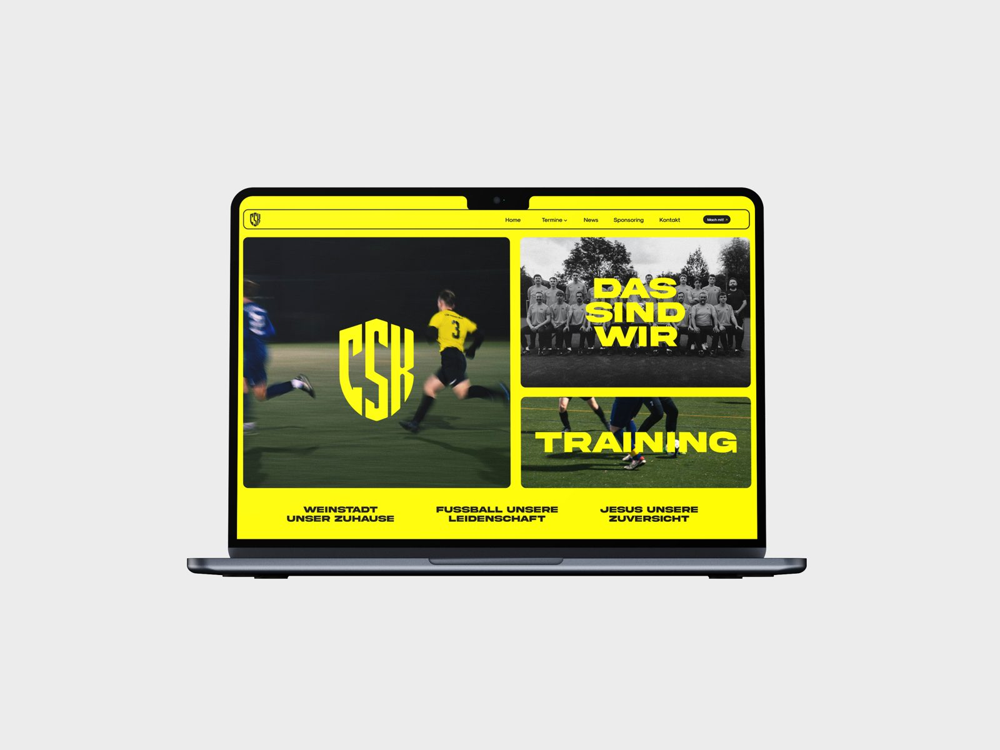
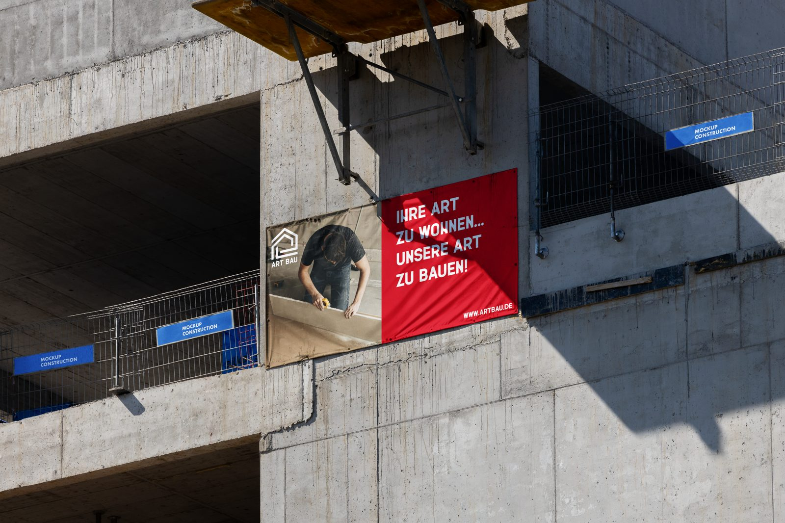
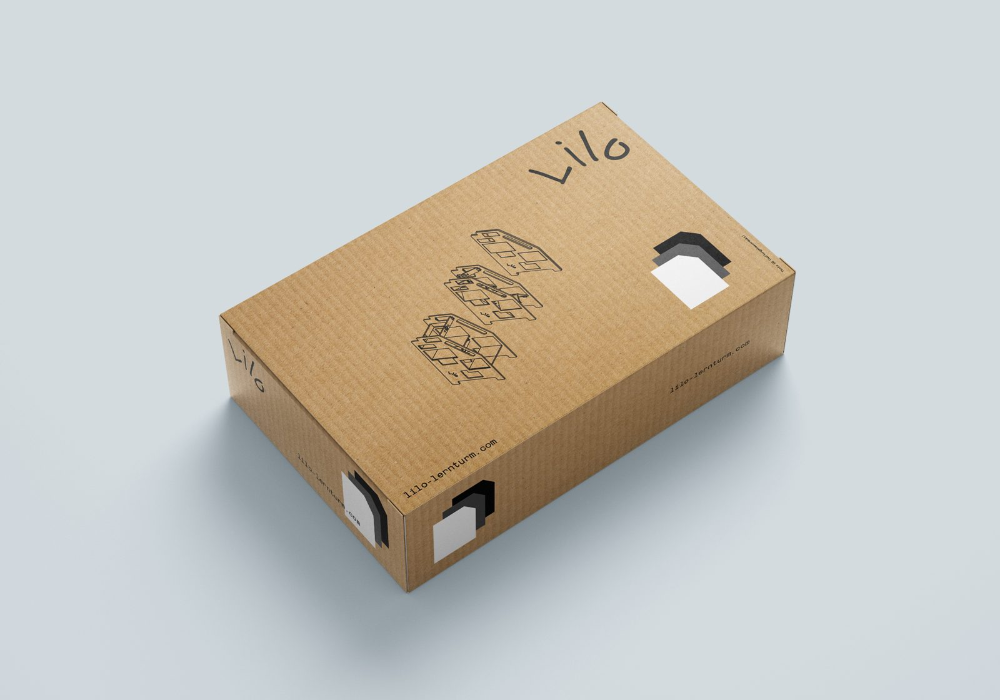
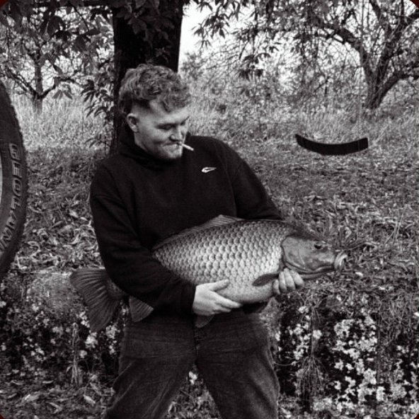

01
DOPPIO
LOGO · FARBWELT
Nach der richtigen Zielgruppe suchen ist manchmal wie Angeln. Wir wollen dir helfen, sie zu catchen.

CORPORATE DESIGN & WEBDESIGN
PHOTOGRAPHY & SOCIALS
AUSGEWÄHLTE PROJEKTE

LOGO · FARBWELT

CORPORATE DESIGN · PACKAGING · WEBDESIGN

CORPORATE DESIGN · WEBDESIGN · PHOTOGRAPHY
LOGO · ILLUSTRATION

LOGO · PACKAGING

LOGO · CORPORATE DESIGN · MERCH

LOGO · PACKAGING · MERCH

PACKAGING · PLAKAT · STICKER

BUCHCOVER · EDITORIAL

LOGO · SOCIAL ADS


GRAFIKDESIGN & WEBDESIGN

PHOTOGRAPHY & VIDEOGRAPHY
Hej, what up?
Ich bin Ruben und ich bin leidenschaftlich gern Grafiker. Corporate Designs, die aus der Masse hervorstechen, sind meine liebsten. Ich würde vermutlich sagen, „Reasoned Simplicity“ ist genau meine Ecke. Wir freuen uns schon drauf, zusammen mit euch geile Projekte zu schmeißen!
Ich bin Luca,
Videografie und Fotografie lassen mein Herz höher schlagen. Egal, ob’s Produktionen am professionellen Set für die Industrie sind oder Porträts für euren Firmenauftritt. Mit Liebe fürs Detail finden wir auch hier genau den richtigen Weg für euch und euren professionellen Auftritt. Lass uns starten!
WAS WIR TUN
Markenidentität, Logodesign, Brand Strategy, Corporate Design. Wir entwickeln Marken, die im Gedächtnis bleiben.
Imagefilme, Dokumentationen, Commercials. Von der Idee bis zum fertigen Cut.
Web, App, Print, Packaging. Visuelles Design, das Grenzen sprengt.
Editorial, Kampagnen, Portraits, Produktfotografie. Bilder, die Geschichten erzählen.